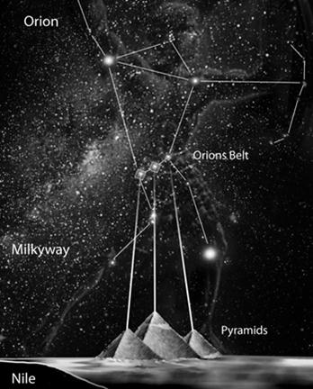

La Cathédrale Sainte-Sophie à Constantinople (Istanbul) est devenue le plus majestueux monument de changement d'époques. Les contemporains de sa construction considéraient initialement cette cathédrale comme l'incarnation visible de l'espace. Lors de la construction de la cathédrale, cette idée s'est traduite non seulement dans sa composition d’autel, mais aussi dans ses dimensions, qui ne sont pas aléatoirement devenues la présentation d'échelle de certains principaux paramètres de l'espace environnant. En particulier, la hauteur de la cathédrale était de 64 mètres, ce qui est quasi-exactement égale à un cent millième du rayon terrestre. La même hauteur, réalisée pour la première fois dans la pyramide de Mykérinos sur le plateau de Gizeh en Egypte, a beaucoup d'autres célèbres temples. Par exemple, la Cathédrale Basile-le-Bienheureux de Moscou et la Cathédrale Notre-Dame de Paris. La hauteur est pertinente dans le cas de la cathédrale de Strasbourg aussi : 142 m – c'est non seulement une coïncidence assez exacte avec la hauteur de la pyramide de Khéphren en Egypte, mais c’est aussi environ un dix millionième du diamètre du Soleil (1.400.000 km). La hauteur de la pointe de la Cathédrale Notre-Dame de Rouen est de 151 mètres (de 1876 à 1880, celle-ci était le plus haut bâtiment du monde). Cela est pratiquement identique à la hauteur de la grande pyramide de Khéops et représente un milliardième de la distance de la Terre au Soleil !
L’assurance que ce ne sont pas des coïncidences aléatoires est basée, notamment, sur l'analyse des dimensions de l’ensemble des pyramides de Gizeh, dont la hauteur modélise à la même échelle tous les dimensions mentionnées ci-dessus : de la Terre (la pyramide de Mykérinos), du Soleil (la pyramide de Khéphren) et de l'orbite terrestre (la pyramide de Kheops). Cette coïncidence ne peut pas être aléatoire. Et cela signifie, d'une part, la preuve de la connaissance des réelles relations dans l'espace environnant déjà dans les premiers stades de l'existence de l'Égypte antique, et, d'autre part, l’importance, qui eut été accordée à ces connaissances. Probablement, ce n’est pas au hasard que la même échelle de hauteurs, comme dans les pyramides de Gizeh, a été réalisée dans l’ensemble des plus célèbres cathédrales de France.
Dans le contexte de l’idée commune de la projection terrestre de l'espace et de la réalisation progressive de l'ordre spatial sur la terre, il faut accorder une attention à d'autres coïncidences, encore plus intéressantes.
Les cathédrales et la constellation d'Orion
Parmi toutes les constellations, au fil des millénaires, une attention particulière était portée à la constellation d'Orion qui est la plus « humaine » de toutes les constellations, car on peut facilement reconnaître la figure humaine dans sa forme distinctive en X. Les proportions de la constellation d'Orion très souvent définirent aussi les proportions des plus importants bâtiments de l’Antiquité. Par exemple, en Égypte antique les proportions distinctives de la constellation et la position relative de ses étoiles (principalement, les 3 étoiles de la Ceinture d'Orion) eurent été le prototype de l'emplacement des grandes pyramides de Gizeh et les proportions des principaux temples. Dans les steppes méridionales russes, les nombreux tumulus sont situés de même façon que les grandes pyramides, par les triades distinctives comme les étoiles de la Ceinture d'Orion.
Les proportions de la constellation ont influé les proportions de nombreux temples européens aussi, y compris les français. Un exemple typique est les proportions astromorphiques de la Cathédrale Notre-Dame de Paris avec ses ajouts distinctifs dans la zone de l'autel du bâtiment, qui imitent la position traditionnelle de « mains » d'Orion. L’image et/ou les proportions de la constellation d'Orion portent aussi en eux-mêmes d'autres célèbres cathédrales françaises. Et c'est naturel, si l'on se rappelle l'importance du rôle de cette constellation à la triade de symboles étoiles, qui ont relevé le début de notre ère. Mais, notamment en France, un rôle particulier avait été porté à la constellation de la Vierge, qui se reflétait plusieurs fois, dans différentes variantes, dans les plans, les compositions et les images symboliques sur le territoire du pays.
Sous le signe de la constellation de la Vierge
La constellation de la Vierge peut être considérée comme le principal « secret d’étoiles » de Paris, de Versailles, d’Île-de-France et de toute la France.
La constellation de la Vierge (lat. Virgo) est une très ancienne constellation. Les anciens voyaient une variété de déesses et d’héroïnes, généralement associées à la fertilité et à l'agriculture, dans cette constellation. Voilà pourquoi, sur presque toutes les images connues, la Vierge tient l’épi, qui correspond à l’emplacement de la plus brillante étoile de cette constellation, l'étoile Spica (α Virginis), ce qui signifie justement en latin « l’épi ». À l'époque contemporaine, le point de l’équinoxe automnal (le point d'intersection de l'écliptique et de l'équateur céleste) se trouve à la constellation de la Vierge. C'est justement dans cet endroit que le Soleil se trouve à l'équinoxe automnal. En raison de la précession de l'axe terrestre, la ligne de l'équateur céleste se déplace constamment en haut vers la droite. En conséquence, le point de l'équinoxe automnal se déplace constamment à travers le zodiaque vers la droite à une vitesse d'environ un degré angulaire par 72 ans.
L’idée, que l'emplacement des cathédrales gothiques françaises est d'une manière quelconque liée avec la constellation de la Vierge, est assez répandue. Cependant, les interprétations proposées ne sont pas généralement précises et/ou convaincantes. À cet égard, l'auteur de cette publication a réalisé une recherche informatique spéciale de ce problème. En conséquence, une variante de projection de la constellation de la Vierge sur le territoire de la France contemporaine, qui assure la coïncidence presque absolue (!) des principales étoiles gérant la forme de la Vierge avec l'emplacement de la majorité des plus grandes cathédrales en France, dédiée à la Vierge Marie, tout d’abord, à Chartres, à Rouen et à Amiens, a été trouvée. Quand enfin j’ai réussi à trouver une seule correspondance entre le ciel étoilé et le territoire de la France, qui, dans un passé lointain, probablement, pas plus tard qu'à l'époque des templiers, a été choisie par les anciens constructeurs, alors mes principaux sentiments étaient le saisissement et la joie !
Les nombreuses correspondances frappantes ont témoigné que la correspondance trouvée est exactement la principale variante avec laquelle les créateurs de « la projection terrestre du ciel » se dirigeaient en France et en pays voisins. Dans cette variante, la plus importante est que, lors de la coïncidence de l'orientation de nord des cartes céleste et terrestre, la conformité d’échelle (en unités angulaires) correspond pratiquement exactement au coefficient de 1:10 ! Cela simplifiait essentiellement les différents calculs lors de la projection des motifs étoilés sur la surface de la terre.
L'élément principal du primaire accouplement territorial des étoiles à la surface de la terre est éventuellement devenu les fleuves. En France, il s’agit d'abord à la Loire, qui a été identifiée avec la constellation de la Hydra. En cela, la courbe distinctive du fleuve près d'Orléans a probablement joué un rôle décisif. Le nom de cette ville est traditionnellement considéré comme le dérivé du nom de l'empereur romain Aurélien (214-275). Mais il convient de garder à l'esprit que les origines du nom de l'empereur et du nom de la ville sont associés à la racine indo-européenne « *or- », qui, en particulier, est contenue dans le proto-slave « oriol » (« l’aigle »), dans le grec « ornis » (« l’oiseau ») et dans le latine orior (« s'élever, se hausser »). Et cela est pratiquement identique au sens du nom gaulois initial de la colonie, qui précédait à Orléans et qui signifiait « la colline, l’élévation ». En général, on peut faire la conclusion que le nom « aviaire » d'Orléans répond complétement au fait que l'emplacement de cette ville correspond approximativement à la constellation trapézoïdale distinctive du Corbeau (Corvus).
Le détail le plus intéressant de ce modèle est l’emplacement de la constellation de la Coupe (Crater) en périphérie des provinces de Bourgogne et de Champagne. La capitale de la Bourgogne est Dijon. Traditionnellement, le nom de la ville est considéré comme le dérivé du nom personnel Divio. Mais il est probable que l'ancien (indo-européen ?) nom d’un petit réservoir « dizhka » (en ukrainien et dans certaines autres langues européennes) peut être directement liée à l'origine de ce nom. Il faut également tenir compte que cette région de la France depuis les temps anciens était l'un des principaux centres de vin, et la Coupe, comme le nom de la constellation (premièrement, dans la tradition arabe) est inter prétée le plus souvent comme un réservoir pour le vin. De plus, la principale étoile de cette constellation est appelée Alkes, ce qui signifie justement « le réservoir pour le vin ».
Au XIe siècle, c'est la Bourgogne et la Champagne qui ont joué un rôle particulier dans la naissance du mouvement de croisade et la matérialisation ultérieure des principaux éléments de correspondances d’étoiles sur le territoire de la France. D'ici la majorité des personnages clés de ces événements est originaire : le pape Urbain II, dont l’appel au Concile de Clermont en 1095 a en fait donné naissance à ce mouvement ; Hugues de Payns – le fondateur de l’ordre du Temple, des initiateurs de la création du système astromorphe unique de temples gothiques sur le territoire de la France ; Hugues de Champagne – l’initiateur des « recherches mystérieux du Graal » ; Bernard de Clairvaux – « la personne le plus extraordinaire du monde occidental», le fondateur de l’Abbaye de Clairvaux et le leader effectif du mouvement au XII siècle, ainsi que – Chrétien de Troyes, grâce aux efforts de qui les images de « Saint Graal » et de roi Arthur sont pour toujours devenues des symboles du mouvement chevaleresque. Ici l’unique abbaye de Cluny s'est formé – le plus grand monastère de l'Europe Occidentale au cours de la période considérée. Le fait majeur est aussi l'ordre cistercien (et l’abbaye cistercienne), fondé dans cette région en 1098, dont le nom vient du nom latin du village Cîteaux, près de Dijon (Cistercium), et est directement lié avec le mot latin « cisterna » – « le réservoir de stockage de liquide ».
Comme nous le voyons, beaucoup est lié avec les symboles de la Coupe dans cette région. En particulier, si l'on considère que, dans la mythologie de la constellation, le contenu de la Coupe est plus souvent associé avec l'eau vive, alors un lien spécifique de cette région avec la symbolique du Graal, la coupe sacrée, dont le nom vient du nom grec « cratère » (le grand récipient pour mélanger l'eau et le vin), ce qui correspond au nom latin de la constellation de la Coupe (Crater), devient compréhensible.
Dans les régions environnantes, il faut faire attention à ce que, dans le strict respect avec la carte d'étoiles, l’étoile Arcturus a identifié l'emplacement de Londres comme de la capitale de la Grande-Bretagne, la constellation du Lion a donné le ton à toute la symbolique héraldique des pays du Benelux et la constellation de la Croix du Sud au nord de Montpellier a symboliquement défini le lieu de naissance du mouvement de croisade.
Il convient de noter aussi que la précision de la correspondance de l’emplacement des étoiles de la Vierge avec leur projection terrestre est tout simplement frappant, compte tenu notamment du fait que les étoiles devaient se projeter non sur la surface imparfaitement plane, mais sur un terrain à la configuration assez complexe.
Le pentagone central de la Vierge a en fait déterminé l'emplacement de toutes les principales cathédrales en Ile-de-France : la plus brillante étoile Spica correspond à la plus célèbre cathédrale de Chartres, d'autres étoiles brillantes – aux cathédrales de Rouen et d'Amiens.
Il est intéressant, que les étoiles moins brillantes de la constellation de la Vierge ont aussi obtenu ses projections assez précises en forme des petites cathédrales, dédiées à Notre-Dame, par exemple, en Normandie.
La ligne de l'écliptique avec le repérage de position du point de l'équinoxe automnal dès l’année 1 de notre ère jusqu'à 1200 permet de voir exactement quelles sont les étoiles qui pourraient servir de marqueurs singuliers de la position de ce point dans les différentes périodes. Il est impossible de ne pas remarquer aussi que la projection de la ligne de l'écliptique traverse Versailles et Paris – et, probablement, ce n’est pas un hasard...
En cela, sur l'écliptique on peut distinguer deux zones spéciales correspondant aux très importantes périodes dans l'histoire de la France et de sa capitale : T1 – la période du temps de Clovis, quand la position et l'importance stratégique de la ville commençaient clairement à définir, et T2 – la période, dès la fin du premier millénaire, quand Paris a effectivement commencé à se transformer en capital de France.
Si l'on examine plus en détail la zone, où les plus célèbres cathédrales françaises de Notre-Dame sont disposées, alors on peut s'assurer à une très grande précision de leur emplacement en conformité avec les étoiles les plus visibles dans la constellation de la Vierge.
Les chiffres sur la carte indiquent les villes où les plus grandes cathédrales, dédiées à Notre-Dame, sont disposées : 1 – Chartres, 2 - Laon, 3 – Rouen, 4 - Amiens, 5 - Évreux. Le chiffre 6 désigne la ville de Pontoise, où, au 12ème siècle, l’Église Notre-Dame a été fondée. Le chiffre 7 correspond à Compiègne, où aujourd'hui il n'y a pas de cathédrale dédiée à Notre-Dame, mais la ville est connue comme l'une des plus anciennes demeures des rois de France et le lieu de l'abbaye anciennement connue.
En général, comme nous le voyons, c’est la constellation de la Vierge et la situation d’étoiles des deux derniers millénaires qui ont bien défini les particularités contemporaines de la « Petite France » («liddle Franke») ou de la région parisienne, du noyau de l'État français.
Alexandre ANOPRIENKO,
Recteur de l’Université Nationale Technique de Donetsk
Partager cette page